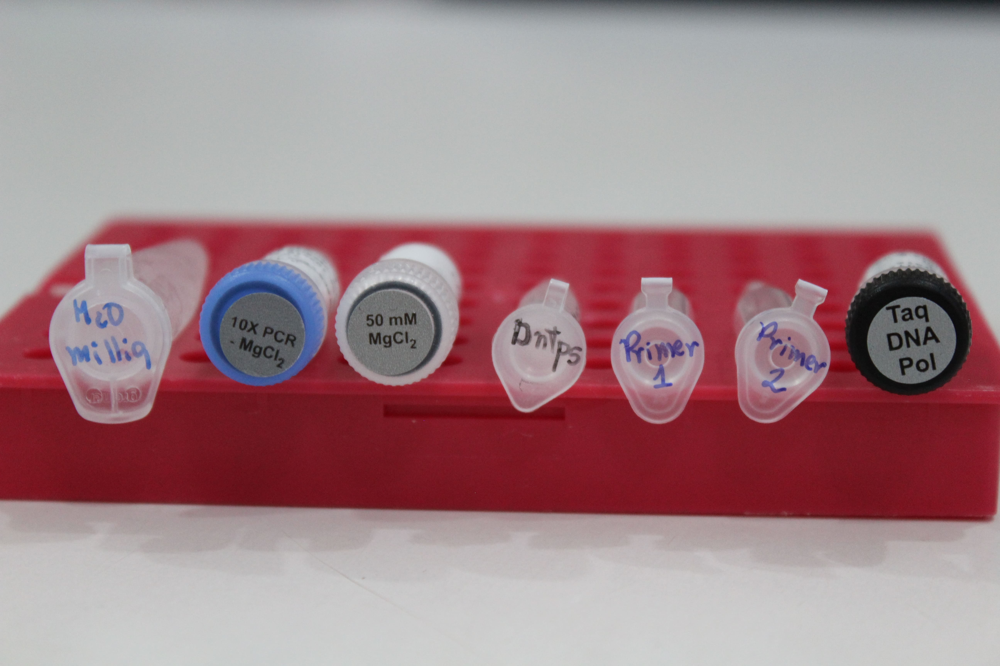
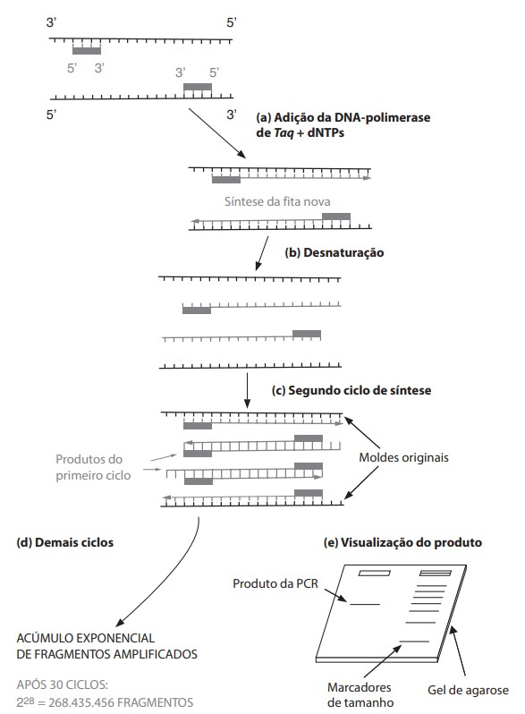

10 Amplificação
Amplificação é o nome dado ao processo de replicação de uma região específica do DNA alvo de um estudo de modo que seja possível produzir um grande número de cópias desse mesmo segmento.
A técnica utilizada para a amplificação é a reação em cadeia da polimerase (PCR), para a execução dessa técnica é preciso primeiramente fazer a seleção do marcador molecular que será utilizado, ou seja, a região do DNA de interesse a ser replicada, isso irá variar conforme as necessidades do estudo em questão. Com base nessa escolha, serão utilizados reagentes específicos com utilidades diferentes para que a reação aconteça.
Os reagentes utilizados são:
O DNA extraído;
Um par de oligonucleotídeos iniciadores, os chamados primers, sendo um foward (-->) e um reverse (<--). Eles irão se ligar na região que deve ser amplificada e permitir a ação de uma enzima polimerizadora;
A enzima DNA polimerase. Normalmente a enzima utilizada nas reações de PCR é proveniente da bactéria Thermus aquaticus (por isso Taq), uma espécie termófila adaptada a viver em águas de alta temperatura, dessa forma, a enzima advinda dela é termoestável e consequentemente resistente às altas temperaturas da PCR sem sofrer desnaturação;
Bases nitrogenadas livres, os desoxirribonucleotídeos (dNTPs);
Tampão de reação (MgCl2-), importante para agir como cofator da DNA polimerase;
Solução tampão, com o objetivo de manter o pH da reação estável durante o ciclo de amplificação;
Água Milli-Q, para completar o volume necessário.

A mistura desses componentes é levada ao termociclador, um aparelho com a capacidade de aquecer e resfriar as amostras, isso é importante porque são temperaturas específicas que permitem a abertura das fitas, anelamento dos primers e a ação da enzima DNA-polimerase. Comumente, dividimos a PCR em três etapas, são elas:
Desnaturação: Nesse momento as fitas de DNA, configuradas em dupla-hélice, terão suas ligações de hidrogênio quebradas, sendo assim separadas. Essa etapa ocorre graças à elevação da temperatura do termociclador a temperaturas acima de 90° C.
Anelamento: Com as fitas já desnaturadas, a temperatura do aparelho é reduzida comumente para valores entre 45° C e 65° C e o par de primers, chamados de iniciadores, se ligam com as suas sequências complementares na fita molde.
Polimerização: O termociclador regula a sua temperatura para 72° C, atingindo a temperatura ótima para a ação da enzima DNA polimerase, que começa a síntese de novas fitas utilizando as dNTPs livres como matéria prima. A síntese só é possível graças à disponibilidade de extremidades 3’OH livres pertencentes aos primers.
As três etapas citadas anteriormente são repetidas em cerca de 20 a 30 ciclos, possibilitando que até bilhões de cópias da região selecionada sejam produzidas.

10.1 Protocolo de amplificação
Para uma reação de PCR iremos precisar de:
Tubo de 0,5 (novo)
Tubos de 0,2 (novo)
Reagentes
DNA
Marcador permanente
1º Passo: Escrever em cada tubinho de 0,2 o número da amostra referente (lembrando de fazer um tubo branco, ou seja, esse é um tubinho onde não colocamos DNA, apenas o mix);
2º Passo: Preparar o mix;
3º Passo: Distribuir o mix nos tubinhos de 0,2;
4º Passo: Acrescentar o DNA correspondente em cada tubinho;
5º Passo: Colocar a reação no termociclador.
O tubo de 0,5 será utilizado para realizar o mix da PCR. O mix nada mais é que a junção de todos os reagentes que precisamos em um único tubo para facilitar na hora de pipetar. Para cada amostra que queremos realizar PCR com 2μl de DNA, precisa dos seguintes reagentes e quantidades:
| Reagentes | Quantidade |
|---|---|
| Água Milli-Q | 17,50 μL |
| Tampão 10X | 2,50 μL |
| MgCl2 | 1,00 μL |
| dNTPs | 1,00 μL |
| Primer 1 | 0,40 μL |
| Primer 2 | 0,40 μL |
| Taq | 0,20 μL |
Obs: Para uma reação com uma quantidade diferente de 2μl de DNA, o valor alterado para mais ou para menos será sempre da Água Mq.
Lembrando que para realizar a PCR, é preciso multiplicar o valor da tabela pelo número de amostras que serão preparadas, somando sempre o branco e mais uma para margem de erro. Você pode acessar a tabela para impressão com esses cálculos já realizados no link <______>.
Após realizado o mix, para uma reação de 2μl de DNA, iremos transferir do tubo do mix 23μl para cada um dos tubinhos de 0,2 (uma reação deve ter volume total de 25μl). Nesse momento pode utilizar a mesma ponteira, já que se trata dos mesmos reagentes.
Feito isso, feche o tubo do branco, pois ele já se encontra finalizado e pode iniciar a distribuição do DNA nos tubinhos de 0,2 respectivos, lembrando de trocar a ponteira a cada amostra.